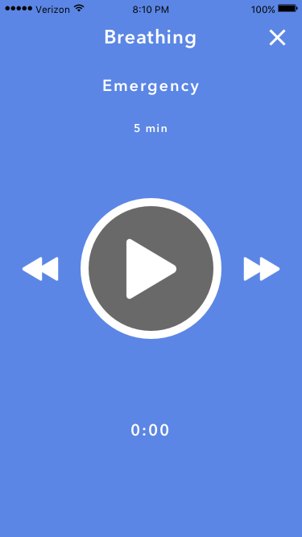
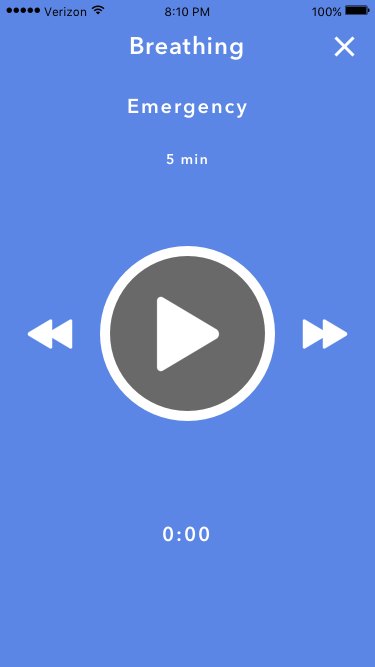

Mindfull
Purpose
Something I'm passionate about is further advancing for mental health to be stripped of its negative stigma and to provide comfort from the painful effects it may cause. I decided to research areas where solutions could possibly be provided. Along the way, I discovered Headspace. Inspired by both their ambitions and design, I decided to come up with my own solution to help the battle for mental health.
Problems
Personally coming from a history where I visibly saw the importance of mental health, I narrowed down several recurring problems to solve:
The pressure from having to deal with certain negative stigmas involving mental health.
The lack of accountability when it comes to self-care.
The spiraling effects unhealthy introspection can cause.
The powerless feeling during physical emergencies, such as anxiety attacks.
When I designed Mindfull, I wanted to account for at least the problems listed above, though there are definitely more. Below are the solutions I came up with.
Dedicated platform
Pressured from the negative attention mental health sometimes receives, people have become more wary about sharing their personal dealings with it, especially publically.

Mindfull would act as a separate platform entirely to help provide a sense of security and separation from regular social media. Just like how one portrays themselves differently between Snapchat and LinkedIn, Mindfull is a platform where people can focus on their health.
Quick and accessible relief
Acknowledging the benefits meditation can have for your health and following in Headspace's footsteps (really good work), Mindfull also incorporates this as one of its functionalities.
I decided to also add breathing as a separate category because a person might not want to go through a whole meditiation session, but rather just want to have a quick moment to regather themselves.
 

Not alone
One aspect I really wanted to achieve with Mindfull is not only to become self-aware of your own health, but to also have the option to talk to friends about yourself in a different way. People can choose who they trust and confide in the most to help be part of their journey towards more control.
This tackles two of the problems mentioned earlier: the lack of accountability when it comes to self-care and the powerless feeling during an an emergency, such as an anxiety attack.
Mindfull maintains a feature where after you have initiated and completed an emergency breathing session, it asks you if you want to alert selected friends that you just endured something. This can be useful if someone wants to seek for help right away after an anxiety attack or any other form of emergency.
Journal
Studies show that writing can help alleviate both mental and physical pains. Mindfull allows you to create your own personal journal, which would provide for healthier introspection, overall improvement in mood, and accessible stress relief.
Mindfull allows for simple and clean organization of your journal. One thing about it that I wanted to emphasize was communication. Some, if not all, of a person's writing could be very intimate and something they want to keep to themselves.
However, there are times when people might not know what to say at the moment but are able to later capture it in words and possibly want to share it with someone.
The difference between this and just simply texting someone how you are feeling is, again, the platform in which the writing is done. It creates a different level of intimacy in comparison to a chat bubble. Mindfull allows for a very easy and swift writing experience as well as providing for quick access to share your words with your friends when you are ready.
Accountability
This can be a long and lonely journey, and sometimes doing it yourself can be hard. This is why I wanted to set up an accountability system.
Mindfull will allow people to set reminders for themselves when to complete a meditation or breathing session to stay consistent with their plan. However, it is easy to lose track or to simply give up. This is why I decided to allow people to set reminders for their friends as well, so that you have another person - a meaningful human interaction - reminding you and motiviating you to keep going versus just the app.

My process
If you're still reading, I'd like to explain more in depth why I intentionally made certain decisions the way I did.
Why only breathing and meditation?
When I first sketched my design, I actually had four functions: breathing, meditation, focus, and emergencies. I was thinking of everything I could solve that was related to the mind, and I thought about how easy it is to get distracted when you should be focused on something you're supposed to do. I also know the fear from losing control of self and the body shutting down during moments of panic, which is why I wanted to add the emergency option as its own function. It was actually going to be my main focus for the app.
However, I realized that the focus option had two problems: direction and fit. There are so many ways that people focus in their own special way that I thought it would almost be counter productive to add this feature. A bigger problem was it's fit with the rest of the app. After thinking about using the app with the feature, I realized it takes away from the true purpose of the app: your health. It's not supposed to be a micromanager that makes sure you're doing things when you're supposed to. It's meant to be a familiar place to go to when you need your time to yourself and have the option available to open up with people you trust when you feel it's right to share.
As with the emergency option, I still kept it because that one is especially important to me. I decided it fits well with breathing because I came across the 7-11 breathing method. I also know that, especially if you are by yourself, there is not much you can do. I hate the fact that people can feel so powerless during those moments and if breathing is proven to help you take control back, then I wanted to give that back to people.
Why a journal?
This one I struggled with a lot. Why would people want to write something so personal in their phone? It's so inconvenient. Wouldn't people rather just write something down with paper and pen? At the very least, type it on your computer? These are all definitely valid reasons, but I realized a few things that ultimately made me keep the function.
Why do people have journals or diaries in the first place? Why doesn't everyone just strictly write on college-ruled paper or strictly write on Microsoft Word? I realized that, in the end, it's what you do with your writing that holds its most value. While writing things on mobile may not be the most efficient method, it is never specified that they have to be long essays. They can just as well be short snippets of your thoughts. I also realized that if people have the burst of motivation to write something long, they will write it by any means necessary. The reason why mobile comes in handy is because some thoughts come and go, even important ones. Maybe you are on the subway or walking through the park. Most likely you will have your phone, and the journal provides a quick outlet to write down what it is you are feeling.
What I also wanted to emphasize was human interaction. This is why I included the option to send your journal entries to your friends. I even included the undo button incase you change your mind, which can happen. Physically seeing your personal thinking being sent can initially startle you and maybe you change your mind, and that's completely okay too.
Reminders are great, but are they actually effective?
My biggest problem with including the reminders was this: how do I make it so the reminders don't end up feeling like an annoying alarm clock? Something that you dread to see pop up on your phone? This is again, where I include the human aspect of the app.
I understand getting into a rhythm of things is hard, especially if it's something really foreign to you. I will admit, the two reasons why I kept the reminders required a leap of faith: the nature of the human spirit and the power of habit.
I believe people are naturally good, and so I trusted the nature of good friendships when I decided to allow reminders for friends. I believe this creates a power of accountability and responsibility. I also believe that friends would encourage one another, something that is missing from simply seeing a notification saying "hey, it's time." I still kept it, of course, because that may be enough for some people. But others may need that extra push, that extra encouragement from a friend. I believe the words of motivation from a loved one can help you stay consistent.
I also know the power of habits. If my thinking behind reminders for friends is true, then after a few weeks the reminders will not become an annoying alert, but something you are prepared for. My hope is that people get to the point where the feeling they receive from receiving reminders from their friends transition from "hey, remember to do it," to "hey, let's do this," because if there is any habit to pick up, taking care of yourself is a good one to have.
Conclusion
I had a great time designing this project. I was able to learn Origami and gave myself the opportunity to critically solve problems in an area I wish to shape for the better. Thanks for reading!
View next project